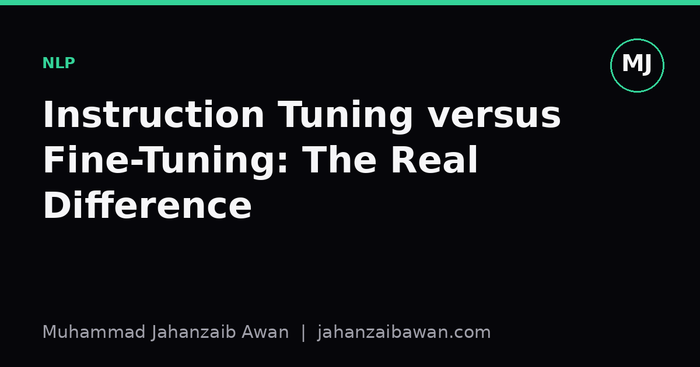

Instruction Tuning versus Fine-Tuning: The Real Difference
Both terms describe adapting a pretrained model with more data, but they answer different questions and mixing them up leads to sloppy evaluation.

Why the vocabulary keeps causing confusion
I have lost count of how many times I have seen 'fine-tuning' and 'instruction tuning' used as if they were synonyms. They are related, both involve taking a pretrained model and updating its weights on additional data, but they are aimed at different goals and that difference matters enormously once you start evaluating what you have actually built. If you conflate them, you end up measuring the wrong thing and drawing conclusions that do not hold up outside your test set.
The short version is this: fine-tuning narrows a model, instruction tuning broadens it. Fine-tuning takes a general model and specialises it for a specific task, a specific domain, or a specific output format. Instruction tuning takes a general model and teaches it a general skill, namely how to interpret and follow a natural language instruction, across many different tasks at once, with the explicit goal of generalising to instructions it has never seen during training.
Fine-tuning: sharpening a model for one job
Classic fine-tuning is what most people picture when they think of adapting a pretrained model. You take a base model, say one pretrained on a large general corpus, and you continue training it on a labelled dataset for a single downstream task: sentiment classification, named entity recognition, a specific style of summarisation, or a particular customer support domain. The dataset is usually structured around one input format and one output format. The evaluation is usually a held-out test set drawn from the same distribution as the training data.
Suppose I fine-tune a model on ten thousand labelled product reviews to classify sentiment as positive, negative, or neutral. After training, I test it on a held-out set of two thousand reviews from the same retailer and the same review style, and it scores well, say ninety two percent accuracy. That is a legitimate result, but it tells me almost nothing about how the model behaves on reviews from a different retailer, in a different register, or on a task that looks even slightly different, such as rating reviews on a five point scale instead of three categories. The model has learned the task, not the general skill of following an instruction about sentiment.
This narrowness is not a flaw, it is the point. Fine-tuning is the right tool when you have a fixed task, a stable data distribution, and you care about squeezing out maximum performance on exactly that task. The risk only appears when people extrapolate fine-tuning results to claims about general capability. A model fine-tuned to summarise legal contracts well is not thereby a good general summariser, and testing it only on more legal contracts will never reveal that gap.
Instruction tuning: teaching the skill of following instructions
Instruction tuning takes a different shape entirely. Instead of one task with one format, the training data is a large collection of many different tasks, each phrased as a natural language instruction paired with an appropriate response: summarise this passage, translate this sentence, answer this question, write a poem in this style, extract the dates from this text. The point is not to master any single one of these tasks. The point is to learn the general pattern of reading an instruction and producing a response that satisfies it, in a way that transfers to instructions never seen during training.
Here is where leakage-aware evaluation becomes essential. If my instruction tuning set contains examples of summarisation, translation, and question answering, and I then evaluate the resulting model on summarisation, translation, and question answering drawn from the same source datasets, I have not tested generalisation at all. I have just tested whether the model memorised patterns from tasks it was explicitly shown. A meaningful evaluation of instruction tuning holds out entire task categories, not just held-out examples within a task, so the model is scored on instructions structurally different from anything in training: perhaps it saw summarisation and translation during tuning, but is tested on table-to-text generation, a task family it never encountered.
Consider a concrete comparison. Say I instruction-tune a model on fifty task types with two hundred examples each, ten thousand examples in total, deliberately holding out five task types entirely. If the model scores well on the forty five seen task types but collapses on the five held-out ones, that tells me the tuning produced task-specific pattern matching dressed up as instruction following, not the general skill I wanted. If performance on the held-out five stays reasonably close to the seen ones, that is genuine evidence of transfer, and it is a far stronger result than any single-task accuracy number could ever be.
Why the distinction should shape how you evaluate
The practical upshot is that the right evaluation protocol depends entirely on which kind of tuning you are doing, and pretending otherwise produces misleading numbers. For fine-tuning, a clean held-out set from the same distribution, checked carefully for duplicates or near-duplicates leaking from training, is exactly what you want, because the claim being tested is narrow and the evaluation should match that scope.
For instruction tuning, the evaluation has to test generalisation across task boundaries, not just across examples. That means holding out whole categories of instruction, being honest about which task families were represented during tuning even indirectly through similar phrasing, and resisting the temptation to report only the tasks where the model happens to shine. It also means being suspicious of instruction-tuned models evaluated exclusively on benchmarks that resemble their training mixture; strong scores there are consistent with genuine generalisation but equally consistent with the benchmark simply overlapping the training distribution.
My practical rule is to ask, before looking at any result, what specific claim the tuning approach is supposed to support. If the claim is 'this model is good at task X', fine-tuning on X with a clean same-distribution test set is the right evidence. If the claim is 'this model generalises to instructions it has not seen', only a held-out-task-family evaluation counts as evidence, and anything less is a weaker claim wearing a stronger one's clothes.